logistic_susie_v_tccm_ebnm_susie
karltayeb
2022-04-17
Last updated: 2022-04-18
Checks: 7 0
Knit directory: logistic-susie-gsea/
This reproducible R Markdown analysis was created with workflowr (version 1.7.0). The Checks tab describes the reproducibility checks that were applied when the results were created. The Past versions tab lists the development history.
Great! Since the R Markdown file has been committed to the Git repository, you know the exact version of the code that produced these results.
Great job! The global environment was empty. Objects defined in the global environment can affect the analysis in your R Markdown file in unknown ways. For reproduciblity it’s best to always run the code in an empty environment.
The command set.seed(20220105) was run prior to running the code in the R Markdown file. Setting a seed ensures that any results that rely on randomness, e.g. subsampling or permutations, are reproducible.
Great job! Recording the operating system, R version, and package versions is critical for reproducibility.
Nice! There were no cached chunks for this analysis, so you can be confident that you successfully produced the results during this run.
Great job! Using relative paths to the files within your workflowr project makes it easier to run your code on other machines.
Great! You are using Git for version control. Tracking code development and connecting the code version to the results is critical for reproducibility.
The results in this page were generated with repository version abceaee. See the Past versions tab to see a history of the changes made to the R Markdown and HTML files.
Note that you need to be careful to ensure that all relevant files for the analysis have been committed to Git prior to generating the results (you can use wflow_publish or wflow_git_commit). workflowr only checks the R Markdown file, but you know if there are other scripts or data files that it depends on. Below is the status of the Git repository when the results were generated:
Ignored files:
Ignored: .DS_Store
Ignored: .RData
Ignored: .Rhistory
Ignored: .Rproj.user/
Ignored: library/
Ignored: renv/library/
Ignored: renv/staging/
Ignored: staging/
Untracked files:
Untracked: .ipynb_checkpoints/
Untracked: Untitled.ipynb
Untracked: _targets.R
Untracked: _targets.html
Untracked: _targets.md
Untracked: _targets/
Untracked: _targets_r/
Untracked: analysis/alpha_ash_v_point_normal.Rmd
Untracked: analysis/de_droplet_noshrink.Rmd
Untracked: analysis/de_droplet_noshrink_logistic_susie.Rmd
Untracked: analysis/fetal_reference_cellid_gsea.Rmd
Untracked: analysis/fixed_intercept.Rmd
Untracked: analysis/iDEA_examples.Rmd
Untracked: analysis/latent_gene_list.Rmd
Untracked: analysis/linear_method_failure_modes.Rmd
Untracked: analysis/linear_regression_failure_regime.Rmd
Untracked: analysis/logistic_susie_veb_boost_vs_vb.Rmd
Untracked: analysis/logistic_susie_vis.Rmd
Untracked: analysis/references.bib
Untracked: analysis/scale_v_standardize_v_raw.Rmd
Untracked: analysis/simulations.Rmd
Untracked: analysis/test.Rmd
Untracked: build_site.R
Untracked: cache/
Untracked: code/html_tables.R
Untracked: code/latent_logistic_susie.R
Untracked: code/load_data.R
Untracked: code/logistic_susie_data_driver.R
Untracked: code/marginal_sumstat_gsea_collapsed.R
Untracked: code/point_normal.R
Untracked: code/sumstat_gsea.py
Untracked: code/susie_gsea_queries.R
Untracked: data/adipose_2yr_topsnp.txt
Untracked: data/de-droplet/
Untracked: data/deng/
Untracked: data/fetal_reference_cellid_gene_sets.RData
Untracked: data/human_chimp_eb/
Untracked: data/pbmc-purified/
Untracked: data/wenhe_baboon_diet/
Untracked: docs.zip
Untracked: export/
Untracked: index.md
Untracked: simulation_targets/
Unstaged changes:
Modified: _simulation_targets.R
Modified: _targets.Rmd
Modified: analysis/alpha_for_single_cell.Rmd
Modified: analysis/baboon_diet.Rmd
Modified: analysis/gseabenchmark_tcga.Rmd
Modified: analysis/human_chimp_eb_de_example.Rmd
Modified: analysis/single_cell_pbmc.Rmd
Modified: analysis/single_cell_pbmc_l1.Rmd
Deleted: analysis/summary_stat_gsea_univariate_simulations.Rmd
Modified: analysis/the_big_geneset.Rmd
Modified: code/enrichment_pipeline.R
Modified: code/fit_baselines.R
Modified: code/fit_logistic_susie.R
Modified: code/fit_mr_ash.R
Modified: code/fit_susie.R
Modified: code/load_gene_sets.R
Modified: code/logistic_susie_vb.R
Modified: code/marginal_sumstat_gsea.R
Modified: code/simulate_gene_lists.R
Modified: code/tccm_ebnm.R
Modified: target_components/factories.R
Modified: target_components/methods.R
Note that any generated files, e.g. HTML, png, CSS, etc., are not included in this status report because it is ok for generated content to have uncommitted changes.
These are the previous versions of the repository in which changes were made to the R Markdown (analysis/logistic_susie_v_tccm_ebnm_susie.Rmd) and HTML (docs/logistic_susie_v_tccm_ebnm_susie.html) files. If you’ve configured a remote Git repository (see ?wflow_git_remote), click on the hyperlinks in the table below to view the files as they were in that past version.
| File | Version | Author | Date | Message |
|---|---|---|---|---|
| Rmd | abceaee | karltayeb | 2022-04-18 | wflow_publish(“analysis/logistic_susie_v_tccm_ebnm_susie.Rmd”) |
Introduction
source('code/load_data.R')── Attaching packages ─────────────────────────────────────── tidyverse 1.3.1 ──✓ ggplot2 3.3.5 ✓ purrr 0.3.4
✓ tibble 3.1.6 ✓ dplyr 1.0.8
✓ tidyr 1.2.0 ✓ stringr 1.4.0
✓ readr 2.1.2 ✓ forcats 0.5.1── Conflicts ────────────────────────────────────────── tidyverse_conflicts() ──
x dplyr::filter() masks stats::filter()
x dplyr::lag() masks stats::lag()source('code/load_gene_sets.R')
source('code/enrichment_pipeline.R')
source('code/logistic_susie_vb.R')
Attaching package: 'BiocGenerics'The following objects are masked from 'package:dplyr':
combine, intersect, setdiff, unionThe following objects are masked from 'package:stats':
IQR, mad, sd, var, xtabsThe following objects are masked from 'package:base':
anyDuplicated, append, as.data.frame, basename, cbind, colnames,
dirname, do.call, duplicated, eval, evalq, Filter, Find, get, grep,
grepl, intersect, is.unsorted, lapply, Map, mapply, match, mget,
order, paste, pmax, pmax.int, pmin, pmin.int, Position, rank,
rbind, Reduce, rownames, sapply, setdiff, sort, table, tapply,
union, unique, unsplit, which.max, which.min
Attaching package: 'matrixStats'The following object is masked from 'package:dplyr':
countsource('code/tccm_ebnm.R')
params.genesets <- eval(parse(text=params$genesets))
params.thresh <- eval(parse(text=params$thresh))
params.rerun <- eval(parse(text=params$rerun))
cache_rds <- purrr::partial(xfun::cache_rds, dir=params$cache_dir, rerun=params.rerun)genesets <- load_gene_sets()
data <- load_sc_pbmc_noshrink()'select()' returned 1:many mapping between keys and columns# fit logistic susie
do_logistic_susie_cached = function(data,
db,
thresh,
prefix=''){
res <- cache_rds({
purrr::map_dfr(names(data), ~do_logistic_susie(.x, db, thresh, genesets, data))},
file=paste0(prefix, 'logistic_susie_', db, '_', thresh))
}
thresh <- 10^(-(1:10))
logistic_susie_fit <- cache_rds({map_dfr(thresh, ~do_logistic_susie(
'k1', 'gomf', .x, genesets = genesets, data=data))},
file='k1.logistic.susie.threshold')
tccm_ebnm_susie_fit <- cache_rds({do_tccm_point_normal_susie(
'k1', 'gomf', genesets = genesets, data=data, susie.args = list(L=10, maxit=100, verbose=TRUE))},
file='k1.point_normal')
ora <- map_dfr(thresh, ~do_ora('k1', 'gomf', .x, genesets = genesets, data=data))par(mfrow = c(3, 3))
pn_pip <- tccm_ebnm_susie_fit$fit[[1]]$pip
for (i in 1:9){
plot(pn_pip + rnorm(length(pn_pip)) * 0.01, logistic_susie_fit$fit[[i]]$pip,
ylab = 'Logistic PIP', xlab='Point Normal PIP',
main=paste('thresh = ', logistic_susie_fit$thresh[[i]]))
}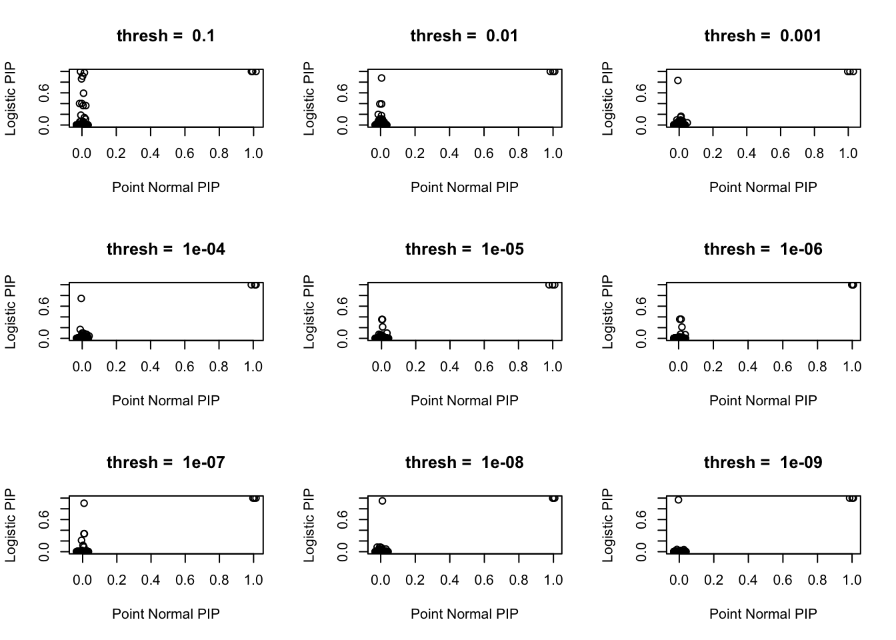
library(susieR)
par(mfrow = c(1, 3))
pn_pip <- tccm_ebnm_susie_fit$fit[[1]]$pip
for (i in 1:9){
susie_plot(logistic_susie_fit$fit[[i]], 'PIP', main=paste('thresh = ', logistic_susie_fit$thresh[[i]]))
susie_plot(tccm_ebnm_susie_fit$fit[[1]]$h$params, 'PIP', main=paste('Point Normal'))
plot(pn_pip + rnorm(length(pn_pip)) * 0.01, logistic_susie_fit$fit[[i]]$pip,
ylab = 'Logistic PIP', xlab='Point Normal PIP',
main=paste('thresh = ', logistic_susie_fit$thresh[[i]]))
}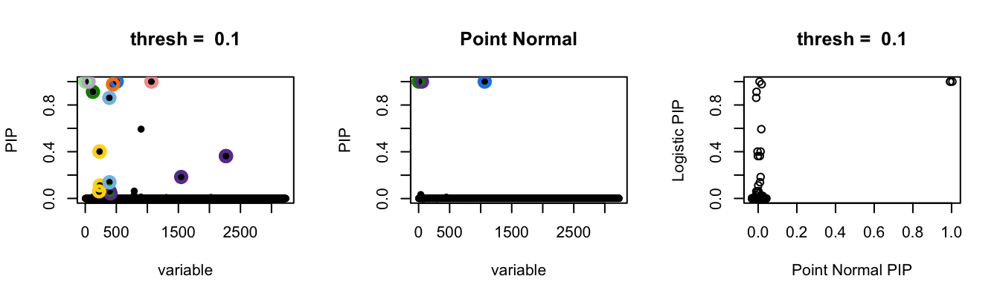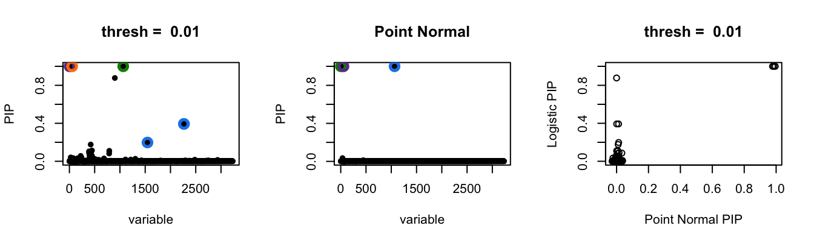 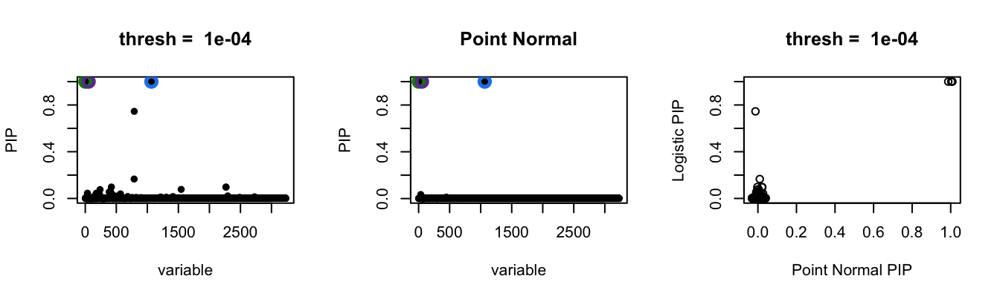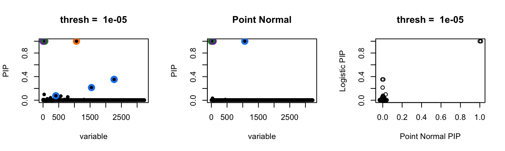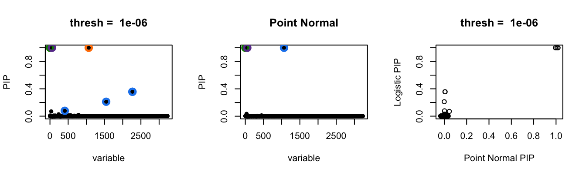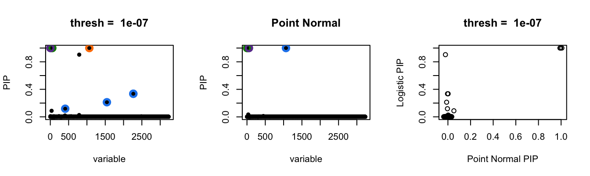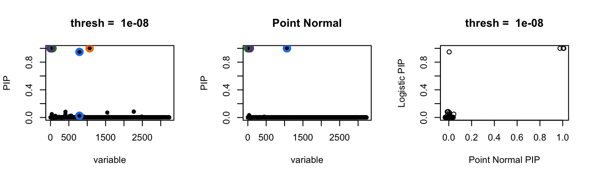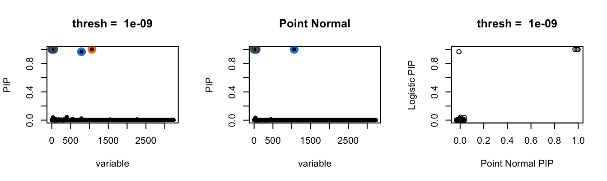
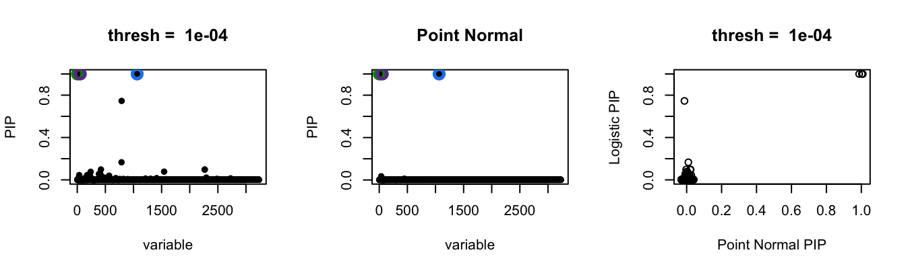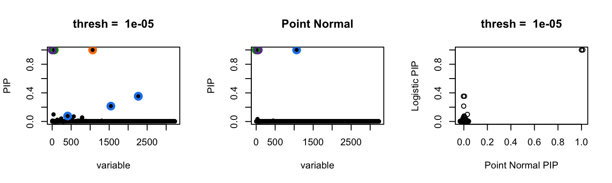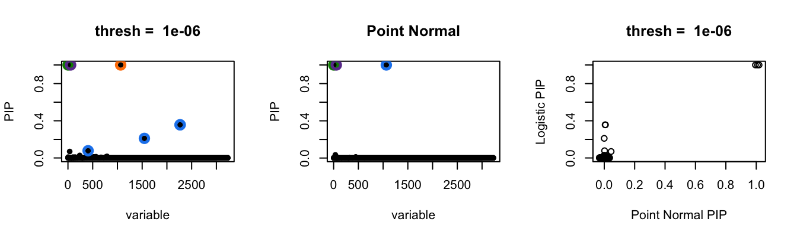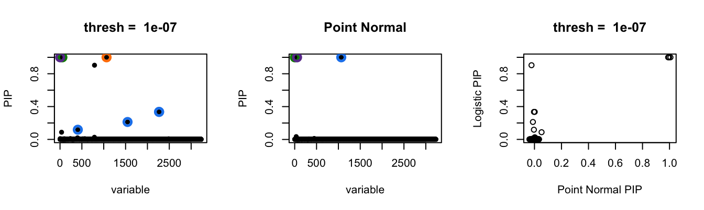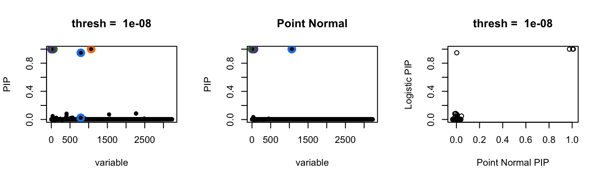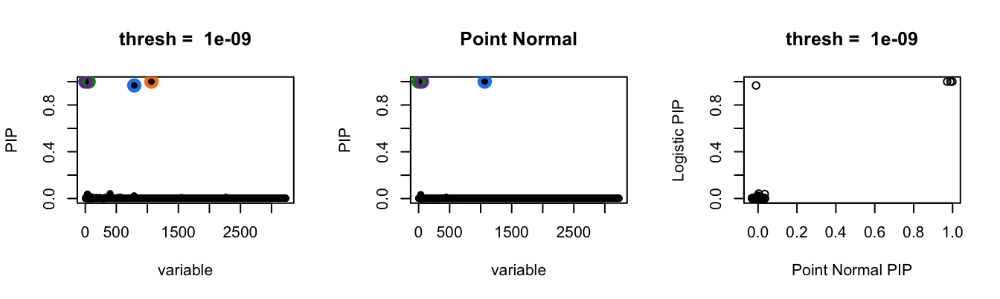
Fit Point Normal SuSiE
source('code/tccm_ebnm.R')
u <- prep_sumstat_data(genesets$gomf, data$k1)
res <- tccm_point_normal_susie(
u$beta, u$se, u$X, update.h=TRUE, update.f1=FALSE, verbose=F, maxit=10)Warning in logistic.susie(data$X, y.init, L = L, maxit = 2): did not converge
after 2 iterations[1] "E: Inf"
[1] "M: 1996.20992343286"
[1] "E: -45.7567882373914"
[1] "M: 118.580937636059"
[1] "E: -19.1347402753418"
[1] "M: 34.3252498390248"
[1] "E: -8.80233700290046"
[1] "M: 13.1956734647974"
[1] "E: -4.37734159467072"
[1] "M: 5.90582243293102"
[1] "E: -2.30714955990334"
[1] "M: 2.90948883978126"
[1] "E: -1.26709334069528"
[1] "M: 1.52908784849205"
[1] "E: -0.718071398445318"
[1] "M: 0.842918223203014"
[1] "E: -0.416770982177695"
[1] "M: 0.481927339715185"
[1] "E: -0.246228723473905"
[1] "M: 0.283434062916058"par(mfrow = c(2, 2))
plot(tail(res$elbo, -1), ylab='ELBO', xlab='iter')
susie_plot(res$h$params, 'PIP', main=paste('Point-normal'))
logit_pi <- with(res, h$get_prior_logits(data, h$params))
hist(1/(1 + exp(-logit_pi)), xlab='prior', main='prior pi_1')
hist(res$gamma, xlab='posterior', main='posterior pi_1')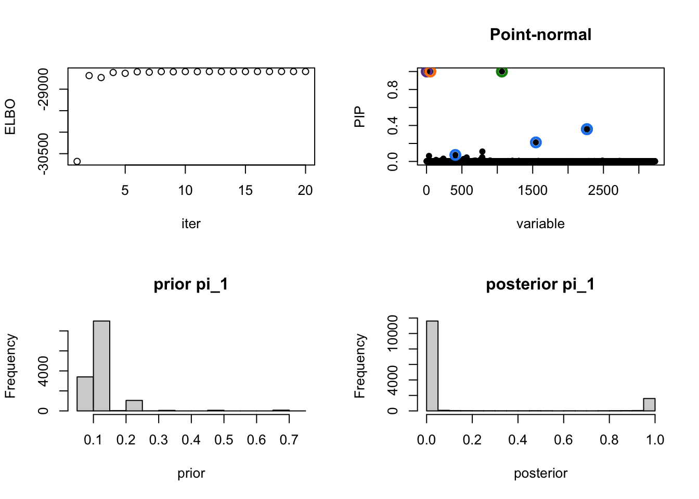
print(diff(res$elbo)) [1] Inf 1996.2099234 -45.7567882 118.5809376 -19.1347403
[6] 34.3252498 -8.8023370 13.1956735 -4.3773416 5.9058224
[11] -2.3071496 2.9094888 -1.2670933 1.5290878 -0.7180714
[16] 0.8429182 -0.4167710 0.4819273 -0.2462287 0.2834341Fit Point normal (no enrich)
source('code/tccm_ebnm.R')
par(mfrow=c(1,2))
u <- prep_sumstat_data(genesets$gomf, data$k1)
res <- tccm_point_normal(
u$beta, u$se, u$X, update.h=TRUE, update.f1=FALSE, verbose=F, logit=-10)[1] "E: Inf"
[1] "M: 1100.09895990487"
[1] "E: 2559.99823503927"
[1] "M: 301.897738590953"
[1] "E: 59.8946926019016"
[1] "M: 17.0090489452996"
[1] "E: 2.89600951085595"
[1] "M: 0.875793418133981"
[1] "E: 0.147961754199059"
[1] "M: 0.0448934179694334"
[1] "E: 0.00758154546565493"
[1] "M: 0.00230072331760311"
[1] "E: 0.00038853541991557"
[1] "M: 0.000117907391540939"
[1] "E: 1.99116329895332e-05"
[1] "M: 6.0425118135754e-06"plot(1/(1+exp(-res$h$get_prior_logits(res$data, res$h$params))))
hist(res$gamma)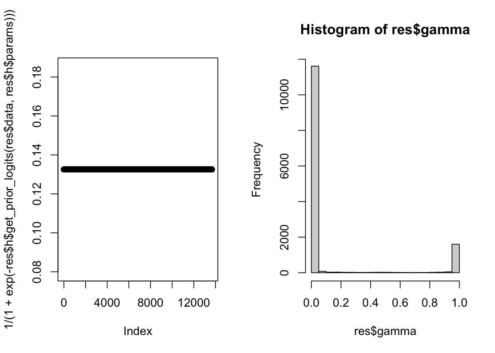
print(sum(res$gamma * log(res$gamma)))[1] -155.1482res <- logistic_susie_fit %>%
get_plot_tbl(., ora)Joining, by = c("experiment", "db", "thresh")
Joining, by = c("geneSet", "component")
Joining, by = c("geneSet", "component")
Joining, by = c("geneSet", "component")
Joining, by = c("geneSet", "component")
Joining, by = c("geneSet", "component")
Joining, by = c("geneSet", "component")
Joining, by = c("geneSet", "component")
Joining, by = c("geneSet", "component")
Joining, by = c("geneSet", "component")
Joining, by = c("geneSet", "component")
Joining, by = c("geneSet", "component")
Joining, by = c("geneSet", "component")
Joining, by = c("geneSet", "component")
Joining, by = c("geneSet", "component")
Joining, by = c("geneSet", "component")
Joining, by = c("geneSet", "component")
Joining, by = c("geneSet", "component")
Joining, by = c("geneSet", "component")
Joining, by = c("geneSet", "component")
Joining, by = c("geneSet", "component")
Joining, by = "geneSet"
Joining, by = "geneSet"
Joining, by = "geneSet"
Joining, by = "geneSet"
Joining, by = "geneSet"
Joining, by = "geneSet"
Joining, by = "geneSet"
Joining, by = "geneSet"
Joining, by = "geneSet"
Joining, by = "geneSet"html_tables <- logistic_susie_fit %>%
get_table_tbl(., ora)Joining, by = c("experiment", "db", "thresh")
Joining, by = c("geneSet", "component")
Joining, by = c("geneSet", "component")
Joining, by = c("geneSet", "component")
Joining, by = c("geneSet", "component")
Joining, by = c("geneSet", "component")
Joining, by = c("geneSet", "component")
Joining, by = c("geneSet", "component")
Joining, by = c("geneSet", "component")
Joining, by = c("geneSet", "component")
Joining, by = c("geneSet", "component")
Joining, by = c("geneSet", "component")
Joining, by = c("geneSet", "component")
Joining, by = c("geneSet", "component")
Joining, by = c("geneSet", "component")
Joining, by = c("geneSet", "component")
Joining, by = c("geneSet", "component")
Joining, by = c("geneSet", "component")
Joining, by = c("geneSet", "component")
Joining, by = c("geneSet", "component")
Joining, by = c("geneSet", "component")
Joining, by = "geneSet"
Joining, by = "geneSet"
Joining, by = "geneSet"
Joining, by = "geneSet"
Joining, by = "geneSet"
Joining, by = "geneSet"
Joining, by = "geneSet"
Joining, by = "geneSet"
Joining, by = "geneSet"
Joining, by = "geneSet"
Joining, by = "geneSet"html_tables$k1$gomf# A tibble: 2,107 × 23
experiment db thresh susie.args geneSet component alpha beta
<chr> <chr> <dbl> <list> <chr> <chr> <dbl> <dbl>
1 k1 gomf 0.1 <named list [5]> GO:0003723 L1 1 e+ 0 0.689
2 k1 gomf 0.1 <named list [5]> GO:0003676 L1 1.58e-21 0.315
3 k1 gomf 0.1 <named list [5]> GO:1901363 L1 2.48e-26 0.224
4 k1 gomf 0.1 <named list [5]> GO:0097159 L1 7.19e-27 0.216
5 k1 gomf 0.1 <named list [5]> GO:0045296 L1 5.75e-30 0.502
6 k1 gomf 0.1 <named list [5]> GO:0008135 L1 2.31e-30 0.791
7 k1 gomf 0.1 <named list [5]> GO:0005509 L1 2.27e-30 -0.374
8 k1 gomf 0.1 <named list [5]> GO:0003743 L1 2.04e-30 0.985
9 k1 gomf 0.1 <named list [5]> GO:0009055 L1 6.26e-31 0.698
10 k1 gomf 0.1 <named list [5]> GO:0140098 L1 6.11e-31 0.403
# … with 2,097 more rows, and 15 more variables: beta.se <dbl>,
# alpha_rank <int>, cumalpha <dbl>, in_cs <lgl>, active_cs <lgl>,
# geneListSize <int>, geneSetSize <dbl>, overlap <dbl>, nGenes <int>,
# propInList <dbl>, propInSet <dbl>, oddsRatio <dbl>, pHypergeometric <dbl>,
# pFishersExact <dbl>, description <chr>html_tables$k1$gomf %>%
report_susie_credible_sets() #%>% htmltools::HTML() %>% print()Loading required package: kableExtra
Attaching package: 'kableExtra'
The following object is masked from 'package:dplyr':
group_rowsWarning: `funs()` was deprecated in dplyr 0.8.0.
Please use a list of either functions or lambdas:
# Simple named list:
list(mean = mean, median = median)
# Auto named with `tibble::lst()`:
tibble::lst(mean, median)
# Using lambdas
list(~ mean(., trim = .2), ~ median(., na.rm = TRUE))
This warning is displayed once every 8 hours.
Call `lifecycle::last_lifecycle_warnings()` to see where this warning was generated.| geneSet | description | alpha | beta | beta.se | pHypergeometric | pFishersExact | overlap | geneSetSize | oddsRatio |
|---|---|---|---|---|---|---|---|---|---|
| L1 | |||||||||
| GO:0003723 | RNA binding | 1 | 0.689 | 0.0556 | 4.19e-54 | 7.8e-54 | 662 | 1490 | 3.41 |
| GO:0003723 | RNA binding | 1 | 0.756 | 0.0563 | 1.28e-48 | 2.26e-48 | 541 | 1490 | 3.14 |
| GO:0003723 | RNA binding | 1 | 0.712 | 0.0572 | 9.15e-43 | 1.14e-42 | 463 | 1490 | 2.96 |
| GO:0003723 | RNA binding | 1 | 0.741 | 0.0578 | 1.61e-42 | 2.75e-42 | 421 | 1490 | 2.97 |
| GO:0003735 | structural constituent of ribosome | 1 | 1.67 | 0.168 | 2.04e-31 | 2.04e-31 | 80 | 146 | 9.03 |
| GO:0003735 | structural constituent of ribosome | 1 | 1.73 | 0.168 | 7.99e-32 | 7.99e-32 | 77 | 146 | 9.23 |
| GO:0003735 | structural constituent of ribosome | 1 | 1.83 | 0.168 | 2.31e-33 | 2.31e-33 | 76 | 146 | 9.79 |
| GO:0003735 | structural constituent of ribosome | 1 | 1.81 | 0.168 | 1.49e-31 | 1.49e-31 | 72 | 146 | 9.37 |
| GO:0003735 | structural constituent of ribosome | 1 | 1.74 | 0.168 | 6.86e-28 | 6.86e-28 | 66 | 146 | 8.47 |
| GO:0003735 | structural constituent of ribosome | 1 | 1.8 | 0.168 | 3.73e-29 | 3.73e-29 | 66 | 146 | 8.92 |
| L2 | |||||||||
| GO:0005515 | protein binding | 1 | 0.51 | 0.0407 | 2.28e-28 | 3.95e-28 | 2910 | 9870 | 3.63 |
| GO:0005515 | protein binding | 1 | 0.545 | 0.042 | 8.38e-26 | 1.44e-25 | 2280 | 9870 | 3.16 |
| GO:0003735 | structural constituent of ribosome | 1 | 1.69 | 0.169 | 6.43e-33 | 6.43e-33 | 90 | 146 | 9.51 |
| GO:0005515 | protein binding | 1 | 0.579 | 0.0438 | 4.65e-24 | 8.53e-24 | 1690 | 9870 | 2.86 |
| GO:0005515 | protein binding | 1 | 0.646 | 0.0445 | 2.65e-25 | 5.55e-25 | 1560 | 9870 | 2.88 |
| GO:0003723 | RNA binding | 1 | 0.696 | 0.059 | 1.24e-34 | 1.67e-34 | 348 | 1490 | 2.78 |
| GO:0005515 | protein binding | 1 | 0.681 | 0.0457 | 1.14e-23 | 1.95e-23 | 1300 | 9870 | 2.78 |
| GO:0005515 | protein binding | 1 | 0.725 | 0.0463 | 4.99e-26 | 9.12e-26 | 1240 | 9870 | 2.9 |
| GO:0005515 | protein binding | 1 | 0.709 | 0.0466 | 4.26e-24 | 7.49e-24 | 1160 | 9870 | 2.81 |
| GO:0005515 | protein binding | 1 | 0.706 | 0.0469 | 7.86e-23 | 1.44e-22 | 1100 | 9870 | 2.76 |
| L3 | |||||||||
| GO:0005515 | protein binding | 1 | 0.583 | 0.0431 | 2.96e-26 | 5.66e-26 | 1930 | 9870 | 3.02 |
| GO:0003735 | structural constituent of ribosome | 1 | 1.72 | 0.168 | 7.7e-34 | 7.7e-34 | 86 | 146 | 9.72 |
| GO:0003723 | RNA binding | 1 | 0.737 | 0.0583 | 1.67e-39 | 2.65e-39 | 387 | 1490 | 2.91 |
| GO:0005515 | protein binding | 1 | 0.662 | 0.0452 | 7.78e-24 | 1.51e-23 | 1410 | 9870 | 2.8 |
| GO:0003723 | RNA binding | 1 | 0.673 | 0.0596 | 8.4e-32 | 1.45e-31 | 321 | 1490 | 2.72 |
| GO:0003723 | RNA binding | 1 | 0.665 | 0.06 | 1.6e-30 | 2.34e-30 | 303 | 1490 | 2.7 |
| GO:0003723 | RNA binding | 1 | 0.607 | 0.0606 | 3.08e-25 | 5.27e-25 | 275 | 1490 | 2.53 |
| GO:0003723 | RNA binding | 1 | 0.597 | 0.061 | 2.11e-24 | 2.61e-24 | 263 | 1490 | 2.52 |
| GO:0003735 | structural constituent of ribosome | 1 | 1.58 | 0.174 | 1.17e-31 | 1.17e-31 | 107 | 146 | 10.5 |
| GO:0003735 | structural constituent of ribosome | 1 | 1.52 | 0.169 | 2.63e-29 | 2.63e-29 | 93 | 146 | 8.65 |
| L4 | |||||||||
| GO:0005164 | tumor necrosis factor receptor binding | 0.975 | 1.98 | 0.363 | 1.94e-07 | 1.94e-07 | 14 | 30 | 9.13 |
| GO:0005164 | tumor necrosis factor receptor binding | 0.967 | 1.92 | 0.363 | 3.58e-07 | 3.58e-07 | 14 | 30 | 8.68 |
| GO:0005164 | tumor necrosis factor receptor binding | 0.948 | 1.85 | 0.363 | 8.04e-07 | 8.04e-07 | 14 | 30 | 8.13 |
| GO:0030545 | receptor regulator activity | 0.861 | -0.941 | 0.122 | 1 | 2.54e-09 | 47 | 345 | 0.581 |
| GO:0008137 | NADH dehydrogenase (ubiquinone) activity | 0.393 | 1.74 | 0.294 | 6.03e-07 | 6.03e-07 | 25 | 46 | 5.74 |
| GO:0050136 | NADH dehydrogenase (quinone) activity | 0.393 | 1.74 | 0.294 | 6.03e-07 | 6.03e-07 | 25 | 46 | 5.74 |
| GO:0008137 | NADH dehydrogenase (ubiquinone) activity | 0.356 | 1.8 | 0.298 | 4.95e-06 | 4.95e-06 | 18 | 46 | 5.15 |
| GO:0050136 | NADH dehydrogenase (quinone) activity | 0.356 | 1.8 | 0.298 | 4.95e-06 | 4.95e-06 | 18 | 46 | 5.15 |
| GO:0008137 | NADH dehydrogenase (ubiquinone) activity | 0.352 | 1.67 | 0.297 | 2.09e-05 | 2.09e-05 | 18 | 46 | 4.65 |
| GO:0050136 | NADH dehydrogenase (quinone) activity | 0.352 | 1.67 | 0.297 | 2.09e-05 | 2.09e-05 | 18 | 46 | 4.65 |
| GO:0008137 | NADH dehydrogenase (ubiquinone) activity | 0.334 | 1.71 | 0.3 | 3.26e-05 | 3.26e-05 | 16 | 46 | 4.64 |
| GO:0050136 | NADH dehydrogenase (quinone) activity | 0.334 | 1.71 | 0.3 | 3.26e-05 | 3.26e-05 | 16 | 46 | 4.64 |
| GO:0003954 | NADH dehydrogenase activity | 0.214 | 1.63 | 0.294 | 2.95e-05 | 2.95e-05 | 18 | 47 | 4.48 |
| GO:0003954 | NADH dehydrogenase activity | 0.211 | 1.67 | 0.298 | 4.42e-05 | 4.42e-05 | 16 | 47 | 4.49 |
| GO:0003954 | NADH dehydrogenase activity | 0.21 | 1.76 | 0.295 | 7.09e-06 | 7.09e-06 | 18 | 47 | 4.97 |
| GO:0003954 | NADH dehydrogenase activity | 0.197 | 1.69 | 0.291 | 1.03e-06 | 1.03e-06 | 25 | 47 | 5.48 |
| GO:0048018 | receptor ligand activity | 0.139 | -0.949 | 0.127 | 1 | 8.83e-09 | 43 | 317 | 0.578 |
| GO:0016655 | oxidoreductase activity, acting on NAD(P)H, quinone or similar compound as acceptor | 0.117 | 1.53 | 0.277 | 3.62e-05 | 3.62e-05 | 18 | 56 | 4.12 |
| GO:0016655 | oxidoreductase activity, acting on NAD(P)H, quinone or similar compound as acceptor | 0.0768 | 1.6 | 0.275 | 7.74e-06 | 7.74e-06 | 20 | 56 | 4.45 |
| GO:0016655 | oxidoreductase activity, acting on NAD(P)H, quinone or similar compound as acceptor | 0.0755 | 1.47 | 0.274 | 3.57e-05 | 3.57e-05 | 20 | 56 | 4.02 |
| GO:0032813 | tumor necrosis factor receptor superfamily binding | 0.0233 | 1.39 | 0.319 | 1.83e-05 | 1.83e-05 | 15 | 42 | 5.16 |
| GO:0032813 | tumor necrosis factor receptor superfamily binding | 0.0217 | 1.45 | 0.319 | 8.25e-06 | 8.25e-06 | 15 | 42 | 5.51 |
| GO:0032813 | tumor necrosis factor receptor superfamily binding | 0.0202 | 1.51 | 0.319 | 4.49e-06 | 4.49e-06 | 15 | 42 | 5.79 |
| GO:0016655 | oxidoreductase activity, acting on NAD(P)H, quinone or similar compound as acceptor | 0.0154 | 1.45 | 0.27 | 4.64e-06 | 6.59e-06 | 27 | 56 | 4.49 |
| GO:0036402 | proteasome-activating ATPase activity | 0.00248 | 2.95 | 0.834 | 8.18e-05 | 8.18e-05 | 5 | 6 | 46.2 |
| GO:0036402 | proteasome-activating ATPase activity | 0.00131 | 3.08 | 0.847 | 5.93e-05 | 5.93e-05 | 5 | 6 | 49.3 |
| GO:0008137 | NADH dehydrogenase (ubiquinone) activity | 0.000569 | 1.15 | 0.343 | 6.24e-05 | 6.24e-05 | 15 | 46 | 4.49 |
| GO:0050136 | NADH dehydrogenase (quinone) activity | 0.000569 | 1.15 | 0.343 | 6.24e-05 | 6.24e-05 | 15 | 46 | 4.49 |
| GO:0003954 | NADH dehydrogenase activity | 0.000434 | 1.11 | 0.339 | 8.25e-05 | 8.25e-05 | 15 | 47 | 4.35 |
| GO:0004911 | interleukin-2 receptor activity | 0.000413 | 3.15 | 1.09 | 0.00128 | 0.00128 | 3 | 3 | Inf |
| GO:0019976 | interleukin-2 binding | 0.000413 | 3.15 | 1.09 | 0.00128 | 0.00128 | 3 | 3 | Inf |
| GO:0016655 | oxidoreductase activity, acting on NAD(P)H, quinone or similar compound as acceptor | 0.000408 | 1.02 | 0.31 | 5.78e-05 | 5.78e-05 | 17 | 56 | 4.05 |
| GO:0046933 | proton-transporting ATP synthase activity, rotational mechanism | 0.000387 | 1.75 | 0.567 | 0.000826 | 0.000826 | 7 | 16 | 7.19 |
| L5 | |||||||||
| GO:0015267 | channel activity | 0.401 | -0.893 | 0.129 | 1 | 6.69e-12 | 36 | 319 | 0.467 |
| GO:0022803 | passive transmembrane transporter activity | 0.401 | -0.893 | 0.129 | 1 | 6.69e-12 | 36 | 319 | 0.467 |
| GO:0022838 | substrate-specific channel activity | 0.111 | -0.892 | 0.133 | 1 | 2.82e-11 | 34 | 302 | 0.466 |
| GO:0005216 | ion channel activity | 0.0606 | -0.893 | 0.134 | 1 | 5.68e-11 | 33 | 293 | 0.467 |
| GO:0005261 | cation channel activity | 0.0171 | -0.985 | 0.153 | 1 | 7.97e-11 | 21 | 223 | 0.383 |
| L6 | |||||||||
| GO:0000981 | DNA-binding transcription factor activity, RNA polymerase II-specific | 0.978 | -0.44 | 0.0625 | 1 | 6.62e-13 | 244 | 1300 | 0.847 |
| GO:0003700 | DNA-binding transcription factor activity | 0.0224 | -0.392 | 0.0604 | 1 | 1.37e-10 | 277 | 1390 | 0.915 |
| L7 | |||||||||
| GO:0008137 | NADH dehydrogenase (ubiquinone) activity | 0.362 | 1.48 | 0.293 | 5.59e-06 | 6.11e-06 | 27 | 46 | 5.31 |
| GO:0050136 | NADH dehydrogenase (quinone) activity | 0.362 | 1.48 | 0.293 | 5.59e-06 | 6.11e-06 | 27 | 46 | 5.31 |
| GO:0003954 | NADH dehydrogenase activity | 0.184 | 1.42 | 0.29 | 9.77e-06 | 1.69e-05 | 27 | 47 | 5.04 |
| GO:0016655 | oxidoreductase activity, acting on NAD(P)H, quinone or similar compound as acceptor | 0.0427 | 1.23 | 0.268 | 2.09e-05 | 2.62e-05 | 30 | 56 | 4.31 |
| GO:0009055 | electron transfer activity | 0.0201 | 0.939 | 0.209 | 9.18e-06 | 1.15e-05 | 47 | 99 | 3.39 |
| GO:0016651 | oxidoreductase activity, acting on NAD(P)H | 0.00767 | 0.886 | 0.207 | 9.41e-05 | 0.000133 | 44 | 98 | 3.05 |
| GO:0005164 | tumor necrosis factor receptor binding | 0.00117 | 1.38 | 0.378 | 0.000551 | 0.000632 | 17 | 30 | 4.88 |
| GO:0032813 | tumor necrosis factor receptor superfamily binding | 0.000626 | 1.13 | 0.32 | 0.000398 | 0.000648 | 22 | 42 | 4.1 |
| GO:0016675 | oxidoreductase activity, acting on a heme group of donors | 0.000602 | 1.39 | 0.404 | 0.000509 | 0.000899 | 15 | 25 | 5.59 |
| GO:0019206 | nucleoside kinase activity | 0.000331 | 1.63 | 0.51 | 0.00148 | 0.00148 | 10 | 15 | 7.45 |
| L8 | |||||||||
| GO:0004888 | transmembrane signaling receptor activity | 0.913 | -0.554 | 0.0904 | 1 | 3.27e-11 | 96 | 609 | 0.687 |
| GO:0004930 | G protein-coupled receptor activity | 0.0627 | -0.722 | 0.129 | 1 | 1.09e-10 | 33 | 289 | 0.474 |
| GO:0038023 | signaling receptor activity | 0.0126 | -0.427 | 0.0789 | 1 | 1.24e-09 | 143 | 796 | 0.806 |
| GO:0060089 | molecular transducer activity | 0.0117 | -0.412 | 0.0763 | 1 | 1.87e-09 | 156 | 850 | 0.828 |
| L9 | |||||||||
| GO:0005201 | extracellular matrix structural constituent | 1 | -1.57 | 0.233 | 1 | 5.72e-08 | 7 | 110 | 0.251 |
res2 <- tccm_ebnm_susie_fit %>%
get_plot_tbl(., ora)Joining, by = c("experiment", "db")
Joining, by = c("geneSet", "component")
Joining, by = c("geneSet", "component")
Joining, by = c("geneSet", "component")
Joining, by = c("geneSet", "component")
Joining, by = c("geneSet", "component")
Joining, by = c("geneSet", "component")
Joining, by = c("geneSet", "component")
Joining, by = c("geneSet", "component")
Joining, by = c("geneSet", "component")
Joining, by = c("geneSet", "component")
Joining, by = c("geneSet", "component")
Joining, by = c("geneSet", "component")
Joining, by = c("geneSet", "component")
Joining, by = c("geneSet", "component")
Joining, by = c("geneSet", "component")
Joining, by = c("geneSet", "component")
Joining, by = c("geneSet", "component")
Joining, by = c("geneSet", "component")
Joining, by = c("geneSet", "component")
Joining, by = c("geneSet", "component")
Joining, by = "geneSet"
Joining, by = "geneSet"
Joining, by = "geneSet"
Joining, by = "geneSet"
Joining, by = "geneSet"
Joining, by = "geneSet"
Joining, by = "geneSet"
Joining, by = "geneSet"
Joining, by = "geneSet"
Joining, by = "geneSet"html_tables2 <- tccm_ebnm_susie_fit %>%
get_table_tbl(., ora)Joining, by = c("experiment", "db")
Joining, by = c("geneSet", "component")
Joining, by = c("geneSet", "component")
Joining, by = c("geneSet", "component")
Joining, by = c("geneSet", "component")
Joining, by = c("geneSet", "component")
Joining, by = c("geneSet", "component")
Joining, by = c("geneSet", "component")
Joining, by = c("geneSet", "component")
Joining, by = c("geneSet", "component")
Joining, by = c("geneSet", "component")
Joining, by = c("geneSet", "component")
Joining, by = c("geneSet", "component")
Joining, by = c("geneSet", "component")
Joining, by = c("geneSet", "component")
Joining, by = c("geneSet", "component")
Joining, by = c("geneSet", "component")
Joining, by = c("geneSet", "component")
Joining, by = c("geneSet", "component")
Joining, by = c("geneSet", "component")
Joining, by = c("geneSet", "component")
Joining, by = "geneSet"
Joining, by = "geneSet"
Joining, by = "geneSet"
Joining, by = "geneSet"
Joining, by = "geneSet"
Joining, by = "geneSet"
Joining, by = "geneSet"
Joining, by = "geneSet"
Joining, by = "geneSet"
Joining, by = "geneSet"
Joining, by = "geneSet"html_tables2$k1$gomf %>%
report_susie_credible_sets()| geneSet | description | alpha | beta | beta.se | pHypergeometric | pFishersExact | overlap | geneSetSize | oddsRatio |
|---|---|---|---|---|---|---|---|---|---|
| L1 | |||||||||
| GO:0003723 | RNA binding | 1 | 0.414 | 0.055 | 4.19e-54 | 7.8e-54 | 662 | 1490 | 3.41 |
| GO:0003723 | RNA binding | 1 | 0.414 | 0.055 | 1.28e-48 | 2.26e-48 | 541 | 1490 | 3.14 |
| GO:0003723 | RNA binding | 1 | 0.414 | 0.055 | 9.15e-43 | 1.14e-42 | 463 | 1490 | 2.96 |
| GO:0003723 | RNA binding | 1 | 0.414 | 0.055 | 1.61e-42 | 2.75e-42 | 421 | 1490 | 2.97 |
| GO:0003723 | RNA binding | 1 | 0.414 | 0.055 | 1.67e-39 | 2.65e-39 | 387 | 1490 | 2.91 |
| GO:0003723 | RNA binding | 1 | 0.414 | 0.055 | 1.24e-34 | 1.67e-34 | 348 | 1490 | 2.78 |
| GO:0003723 | RNA binding | 1 | 0.414 | 0.055 | 8.4e-32 | 1.45e-31 | 321 | 1490 | 2.72 |
| GO:0003723 | RNA binding | 1 | 0.414 | 0.055 | 1.6e-30 | 2.34e-30 | 303 | 1490 | 2.7 |
| GO:0003723 | RNA binding | 1 | 0.414 | 0.055 | 3.08e-25 | 5.27e-25 | 275 | 1490 | 2.53 |
| GO:0003723 | RNA binding | 1 | 0.414 | 0.055 | 2.11e-24 | 2.61e-24 | 263 | 1490 | 2.52 |
| L2 | |||||||||
| GO:0005515 | protein binding | 1 | 0.494 | 0.0384 | 2.28e-28 | 3.95e-28 | 2910 | 9870 | 3.63 |
| GO:0005515 | protein binding | 1 | 0.494 | 0.0384 | 8.38e-26 | 1.44e-25 | 2280 | 9870 | 3.16 |
| GO:0005515 | protein binding | 1 | 0.494 | 0.0384 | 2.96e-26 | 5.66e-26 | 1930 | 9870 | 3.02 |
| GO:0005515 | protein binding | 1 | 0.494 | 0.0384 | 4.65e-24 | 8.53e-24 | 1690 | 9870 | 2.86 |
| GO:0005515 | protein binding | 1 | 0.494 | 0.0384 | 2.65e-25 | 5.55e-25 | 1560 | 9870 | 2.88 |
| GO:0005515 | protein binding | 1 | 0.494 | 0.0384 | 7.78e-24 | 1.51e-23 | 1410 | 9870 | 2.8 |
| GO:0005515 | protein binding | 1 | 0.494 | 0.0384 | 1.14e-23 | 1.95e-23 | 1300 | 9870 | 2.78 |
| GO:0005515 | protein binding | 1 | 0.494 | 0.0384 | 4.99e-26 | 9.12e-26 | 1240 | 9870 | 2.9 |
| GO:0005515 | protein binding | 1 | 0.494 | 0.0384 | 4.26e-24 | 7.49e-24 | 1160 | 9870 | 2.81 |
| GO:0005515 | protein binding | 1 | 0.494 | 0.0384 | 7.86e-23 | 1.44e-22 | 1100 | 9870 | 2.76 |
| L3 | |||||||||
| GO:0003735 | structural constituent of ribosome | 1 | 1.31 | 0.178 | 1.17e-31 | 1.17e-31 | 107 | 146 | 10.5 |
| GO:0003735 | structural constituent of ribosome | 1 | 1.31 | 0.178 | 2.63e-29 | 2.63e-29 | 93 | 146 | 8.65 |
| GO:0003735 | structural constituent of ribosome | 1 | 1.31 | 0.178 | 6.43e-33 | 6.43e-33 | 90 | 146 | 9.51 |
| GO:0003735 | structural constituent of ribosome | 1 | 1.31 | 0.178 | 7.7e-34 | 7.7e-34 | 86 | 146 | 9.72 |
| GO:0003735 | structural constituent of ribosome | 1 | 1.31 | 0.178 | 2.04e-31 | 2.04e-31 | 80 | 146 | 9.03 |
| GO:0003735 | structural constituent of ribosome | 1 | 1.31 | 0.178 | 7.99e-32 | 7.99e-32 | 77 | 146 | 9.23 |
| GO:0003735 | structural constituent of ribosome | 1 | 1.31 | 0.178 | 2.31e-33 | 2.31e-33 | 76 | 146 | 9.79 |
| GO:0003735 | structural constituent of ribosome | 1 | 1.31 | 0.178 | 1.49e-31 | 1.49e-31 | 72 | 146 | 9.37 |
| GO:0003735 | structural constituent of ribosome | 1 | 1.31 | 0.178 | 6.86e-28 | 6.86e-28 | 66 | 146 | 8.47 |
| GO:0003735 | structural constituent of ribosome | 1 | 1.31 | 0.178 | 3.73e-29 | 3.73e-29 | 66 | 146 | 8.92 |
sessionInfo()R version 4.1.2 (2021-11-01)
Platform: x86_64-apple-darwin17.0 (64-bit)
Running under: macOS Big Sur 10.16
Matrix products: default
BLAS: /Library/Frameworks/R.framework/Versions/4.1/Resources/lib/libRblas.0.dylib
LAPACK: /Library/Frameworks/R.framework/Versions/4.1/Resources/lib/libRlapack.dylib
locale:
[1] en_US.UTF-8/en_US.UTF-8/en_US.UTF-8/C/en_US.UTF-8/en_US.UTF-8
attached base packages:
[1] stats graphics grDevices datasets utils methods base
other attached packages:
[1] kableExtra_1.3.4 susieR_0.11.92 matrixStats_0.61.0
[4] BiocGenerics_0.40.0 forcats_0.5.1 stringr_1.4.0
[7] dplyr_1.0.8 purrr_0.3.4 readr_2.1.2
[10] tidyr_1.2.0 tibble_3.1.6 ggplot2_3.3.5
[13] tidyverse_1.3.1
loaded via a namespace (and not attached):
[1] colorspace_2.0-3 ellipsis_0.3.2 rprojroot_2.0.2
[4] XVector_0.34.0 fs_1.5.2 rstudioapi_0.13
[7] bit64_4.0.5 AnnotationDbi_1.56.2 fansi_1.0.2
[10] lubridate_1.8.0 xml2_1.3.3 sparseMatrixStats_1.6.0
[13] codetools_0.2-18 doParallel_1.0.17 cachem_1.0.6
[16] knitr_1.38 jsonlite_1.8.0 workflowr_1.7.0
[19] apcluster_1.4.9 WebGestaltR_0.4.4 broom_0.7.12
[22] dbplyr_2.1.1 png_0.1-7 BiocManager_1.30.16
[25] compiler_4.1.2 httr_1.4.2 backports_1.4.1
[28] RcppZiggurat_0.1.6 assertthat_0.2.1 Matrix_1.4-0
[31] fastmap_1.1.0 cli_3.2.0 later_1.3.0
[34] htmltools_0.5.2 tools_4.1.2 igraph_1.2.11
[37] gtable_0.3.0 glue_1.6.2 GenomeInfoDbData_1.2.7
[40] doRNG_1.8.2 Rcpp_1.0.8.2 Biobase_2.54.0
[43] cellranger_1.1.0 jquerylib_0.1.4 vctrs_0.3.8
[46] Biostrings_2.62.0 svglite_2.1.0 iterators_1.0.14
[49] xfun_0.30 rvest_1.0.2 irlba_2.3.5
[52] lifecycle_1.0.1 renv_0.15.4 rngtools_1.5.2
[55] org.Hs.eg.db_3.14.0 zlibbioc_1.40.0 scales_1.1.1
[58] vroom_1.5.7 MatrixGenerics_1.6.0 hms_1.1.1
[61] promises_1.2.0.1 parallel_4.1.2 yaml_2.3.5
[64] curl_4.3.2 memoise_2.0.1 sass_0.4.0
[67] reshape_0.8.8 stringi_1.7.6 RSQLite_2.2.10
[70] highr_0.9 S4Vectors_0.32.3 foreach_1.5.2
[73] GenomeInfoDb_1.30.1 rlang_1.0.2 pkgconfig_2.0.3
[76] systemfonts_1.0.4 bitops_1.0-7 evaluate_0.15
[79] lattice_0.20-45 Rfast_2.0.6 bit_4.0.4
[82] tidyselect_1.1.2 plyr_1.8.6 magrittr_2.0.2
[85] R6_2.5.1 IRanges_2.28.0 generics_0.1.2
[88] DBI_1.1.2 pillar_1.7.0 haven_2.4.3
[91] whisker_0.4 withr_2.5.0 KEGGREST_1.34.0
[94] RCurl_1.98-1.6 mixsqp_0.3-43 modelr_0.1.8
[97] crayon_1.5.0 utf8_1.2.2 tzdb_0.2.0
[100] rmarkdown_2.13 grid_4.1.2 readxl_1.3.1
[103] blob_1.2.2 git2r_0.29.0 webshot_0.5.2
[106] reprex_2.0.1 digest_0.6.29 httpuv_1.6.5
[109] stats4_4.1.2 munsell_0.5.0 viridisLite_0.4.0
[112] bslib_0.3.1